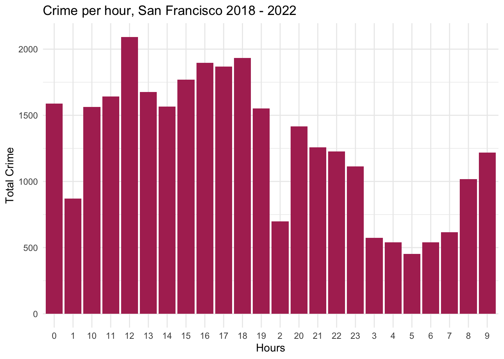

library(tidyverse)
library(lubridate)
knitr::opts_chunk$set(echo = TRUE, warning=FALSE, message=FALSE)Final Project: Prachiti Parkar
final_Project_assignment_1
final_project_data_description
San Francisco Crime Data Exploration
Overview of the Final Project
Part 1. Introduction
In this part, you should introduce the dataset(s) and your research questions.
- Dataset(s) Introduction:
The dataset is downloaded from DataSF, which has a number of open datasets provided by the San Francisco Government. Reference Link: https://datasf.org/opendata/
This dataset contains incident reports filed as of January 1, 2018.
- What questions do you like to answer with this dataset(s)?
As I delve into the dataset on the safe and unsafe parts of San Francisco, my analysis aims to uncover valuable insights regarding crime patterns and neighborhood safety. By carefully examining the available information, I will be able to address several key questions related to the city’s safety dynamics. Here are some specific areas of exploration and the corresponding insights I intend to derive from the data:
District-wise distribution of crime: By analyzing the dataset, I will determine the distribution of crime across different districts in San Francisco. This will help identify areas that experience higher or lower crime rates, enabling a better understanding of the city’s overall safety landscape.
Most frequent resolutions in different districts: Through my analysis, I will identify the most common resolutions or outcomes associated with reported crimes in each district. This will shed light on the effectiveness of law enforcement efforts and the level of community safety achieved in different areas.
Top crimes and their occurrence times: By examining the dataset, I will identify the most prevalent types of crimes in San Francisco and determine the timeframes during which these crimes occur most frequently. This information will assist in identifying potential patterns and trends that can inform targeted prevention and intervention strategies.
Crime hotspots: Utilizing spatial analysis techniques, I will identify crime hotspots within the city. These hotspots represent specific locations or areas that exhibit a significantly higher concentration of criminal activity. Understanding these hotspots can aid in resource allocation and the implementation of targeted crime prevention measures.
Frequency of crimes across months: Through temporal analysis, I will explore the frequency of reported crimes across different months. This analysis will help identify any seasonal variations or trends in criminal activity, providing insights into potential factors influencing crime rates in San Francisco throughout the year.
By addressing these questions, I aim to contribute a comprehensive understanding of the safe and unsafe parts of San Francisco, facilitating informed decision-making and promoting community safety initiatives.
Part 2. Background Study
San Francisco has a complex crime landscape, with challenges including property crimes, drug offenses, theft, assault, and homelessness-related issues. Analyzing crimes provides insights into patterns, hotspots, and factors influencing community safety. It helps assess the effectiveness of law enforcement strategies and prevention programs, aiding evidence-based decision-making.
Analyzing crimes in San Francisco in 2023 is crucial due to evolving post-pandemic effects, shifting social and economic factors, and the need to ensure community safety. It helps understand the impact of the pandemic, adapt strategies accordingly, and address emerging challenges. Data-driven analysis supports evidence-based decision-making, enabling targeted interventions and resource allocation for creating safer communities.
Part 3. Dataset Introduction
These reports are filed by officers or self-reported by members of the public through the San Francisco Police Department’s online reporting system. Based on how the report was received and the sort of incident, the reports are divided into the following categories:
Initial Reports: the first report filed in response to an incident. Coplogic Reports: incident reports submitted by members of the public using the San Francisco Police Department’s online reporting system. Vehicle Reports: any incident reports involving stolen or recovered automobiles
Data is added to open data once incident reports have been reviewed and approved by a supervising Sergeant or Lieutenant. Incident reports may be removed from the dataset if in compliance with court orders to seal records or for administrative purposes such as active internal affair investigations and/or criminal investigations.
Since the data is huge containing 713107 columns and 35 columns, I decided to minimize my dataset to only the year 2023 which has around 30K rows.
Part 4. Dataset Description
This part contains both a coding and a storytelling component.
In the coding component, you should:
read the dataset;
(optional) If you have multiple dataset(s) you want to work with, you should combine these datasets at this step.
(optional) If your dataset is too big (for example, it contains too many variables/columns that may not be useful for your analysis), you may want to subset the data just to include the necessary variables/columns.
data <- read.csv("PrachitiParkar_FinalProjectData/Police_Department_Incident_Reports__2018_to_Present.csv")
data = filter(data, Incident.Year == 2023)present the descriptive information of the dataset(s) using the functions in Challenges 1, 2, and 3;
- for examples: dim(), length(unique()), head();
dim(data)[1] 30687 35length(unique(data))[1] 35head(data)conduct summary statistics of the dataset(s); especially show the basic statistics (min, max, mean, median, etc.) for the variables you are interested in.
summary(data) Incident.Datetime Incident.Date Incident.Time Incident.Year
Length:30687 Length:30687 Length:30687 Min. :2023
Class :character Class :character Class :character 1st Qu.:2023
Mode :character Mode :character Mode :character Median :2023
Mean :2023
3rd Qu.:2023
Max. :2023
Incident.Day.of.Week Report.Datetime Row.ID Incident.ID
Length:30687 Length:30687 Min. :1.230e+11 Min. :1229913
Class :character Class :character 1st Qu.:1.238e+11 1st Qu.:1238439
Mode :character Mode :character Median :1.246e+11 Median :1245767
Mean :1.246e+11 Mean :1245693
3rd Qu.:1.253e+11 3rd Qu.:1252958
Max. :1.261e+11 Max. :1261142
Incident.Number CAD.Number Report.Type.Code
Min. : 0 Min. :172441963 Length:30687
1st Qu.:230065057 1st Qu.:230250554 Class :character
Median :230133182 Median :230470081 Mode :character
Mean :230836666 Mean :230585208
3rd Qu.:230201488 3rd Qu.:230682186
Max. :239000443 Max. :999999999
NA's :6454
Report.Type.Description Filed.Online Incident.Code Incident.Category
Length:30687 Mode:logical Min. : 1000 Length:30687
Class :character TRUE:5475 1st Qu.: 6244 Class :character
Mode :character NA's:25212 Median : 7041 Mode :character
Mean :24104
3rd Qu.:28160
Max. :75030
Incident.Subcategory Incident.Description Resolution
Length:30687 Length:30687 Length:30687
Class :character Class :character Class :character
Mode :character Mode :character Mode :character
Intersection CNN Police.District Analysis.Neighborhood
Length:30687 Min. :20013000 Length:30687 Length:30687
Class :character 1st Qu.:23917000 Class :character Class :character
Mode :character Median :24924000 Mode :character Mode :character
Mean :25209532
3rd Qu.:26412000
Max. :51541000
NA's :1600
Supervisor.District Supervisor.District.2012 Latitude Longitude
Min. : 1.000 Min. : 1.000 Min. :37.71 Min. :-122.5
1st Qu.: 3.000 1st Qu.: 3.000 1st Qu.:37.75 1st Qu.:-122.4
Median : 6.000 Median : 6.000 Median :37.78 Median :-122.4
Mean : 5.993 Mean : 6.048 Mean :37.77 Mean :-122.4
3rd Qu.: 9.000 3rd Qu.: 9.000 3rd Qu.:37.79 3rd Qu.:-122.4
Max. :11.000 Max. :11.000 Max. :37.83 Max. :-122.4
NA's :1616 NA's :1605 NA's :1600 NA's :1600
Point Neighborhoods ESNCAG...Boundary.File
Length:30687 Min. : 1.00 Min. :1
Class :character 1st Qu.: 22.00 1st Qu.:1
Mode :character Median : 50.00 Median :1
Mean : 53.62 Mean :1
3rd Qu.: 86.00 3rd Qu.:1
Max. :117.00 Max. :1
NA's :2081 NA's :30410
Central.Market.Tenderloin.Boundary.Polygon...Updated
Min. :1
1st Qu.:1
Median :1
Mean :1
3rd Qu.:1
Max. :1
NA's :26308
Civic.Center.Harm.Reduction.Project.Boundary HSOC.Zones.as.of.2018.06.05
Min. :1 Min. :1.000
1st Qu.:1 1st Qu.:1.000
Median :1 Median :3.000
Mean :1 Mean :2.259
3rd Qu.:1 3rd Qu.:3.000
Max. :1 Max. :5.000
NA's :26584 NA's :24573
Invest.In.Neighborhoods..IIN..Areas Current.Supervisor.Districts
Mode:logical Min. : 1.000
NA's:30687 1st Qu.: 3.000
Median : 8.000
Mean : 6.759
3rd Qu.:10.000
Max. :11.000
NA's :1605
Current.Police.Districts
Min. : 1.00
1st Qu.: 3.00
Median : 5.00
Mean : 4.94
3rd Qu.: 7.00
Max. :10.00
NA's :1621 Storytelling:
The description of each column is -
Incident Datetime: The date and time when the incident occurred.
Incident Date: The date the incident occurred.
Incident Time: The time the incident occurred.
Incident Year: The year the incident occurred.
Incident Day of Week: The day of the week when the incident occurred.
Report Datetime: The date and time when the report was filed.
Row ID: A unique identifier for each row of data in the dataset.
Incident ID: A system-generated identifier for incident reports.
Incident Number: The number issued on the report, used to reference cases and report documents.
CAD Number: The Computer Aided Dispatch number, assigned by the Department of Emergency Management.
Report Type Code: A system code for different types of reports.
Report Type Description: The description of the report type.
Filed Online: Indicates if the report was filed online using a self-service reporting system.
Incident Code: System codes that describe the type of incident.
Incident Category: A category mapped to the incident code for statistical and reporting purposes.
Incident Subcategory: A subcategory mapped to the incident code for statistical and reporting purposes.
Incident Description: A description of the incident corresponding to the incident code.
Resolution: The resolution of the incident at the time of the report.
Intersection: The names of the intersecting streets closest to the incident location.
CNN: A unique identifier for the intersection.
Police District: The police district where the incident occurred.
Analysis Neighborhood: The neighborhood where each incident occurred.
Supervisor District: The geographic district represented by a member of the Board of Supervisors.
Latitude: The latitude coordinate of the incident location.
Longitude: The longitude coordinate of the incident location.
Point: The geolocation of the incident in OGC WKT format.
Among these, I am going to concentrate on location and time specific columns. To be precice, I am using Police.District, Resolution, Incident.Day.of.Week, Latitude, and Longitude. All of these are non-metered data. I also plan to add additional columns Incident.Hour and Incident.Month so that I can identify the most unsafe times and to check if the crime rate depends on month respectively.
Let’s understand the non metered data i.e Resolution and Police.District.
resolution_types<- n_distinct(data$Resolution)
cat("Number of resolution types in this data: ", resolution_types)Number of resolution types in this data: 4resolution_types_names <- unique(data$Resolution)
print(resolution_types_names)[1] "Open or Active" "Cite or Arrest Adult" "Unfounded"
[4] "Exceptional Adult" districts_counts<- n_distinct(data$Police.District)
cat("Number of districts in this data: ", districts_counts)Number of districts in this data: 11districts <- unique(data$Police.District)
print(districts) [1] "Out of SF" "Mission" "Central" "Park" "Bayview"
[6] "Richmond" "Southern" "Northern" "Tenderloin" "Taraval"
[11] "Ingleside" Part 5. Analysis Plan
Q: Briefly describe what data analyses (please the special note on statistics in the next section) and visualizations you plan to conduct to answer the research questions you proposed above.
I plan to plot some line graphs, bar graphs, heatmaps and use various visualization tools to answer the research questions.
The district wise distribution of crime - I plan to plot a bar graph to show safe and unsafe districts - the tallest bar would be the one has the highest amount of crimes (unsafe) and the shortest would be the one which has the least amount of crimes. (safe)
What is the most frequent resolution in different districts - I plan to plot compound bar graph to show various resolutions in each district, this would be a further deep down than the first plot. The larger proportion of the bar would point to highest number of crimes with that resolution.
What are the top crimes and what time does it occur - I plan to plot bar graphs and heat maps for this question.
What are the crime hotspots - I plan to use the map of San Francisco from get_statemap() library and then accordingly plot the crimes at the respective longitude and latitude.
Frequency of count of crimes across months- I plan to plot line graph/ bar graph (depending on better visual appearance) showing the crimes across months.
Part 6. Descriptive Statistics
Q: Explain why you choose to conduct these specific data analyses and visualizations. In other words, how do such types of statistics or graphs (see the R Gallery) help you answer specific questions? For example, how can a bivariate visualization reveal the relationship between two variables, or how does a linear graph of variables over time present the pattern of development?
The district wise distribution of crime - This will help us figure out the most unsafe and safe districts.
What is the most frequent resolution in different districts - This would help us understand most and least adopted resolutions to deal with crimes.
What are the top crimes and what time does it occur - This will help us identify the most unsafe times - day or night and this can help the police increase & tighten security during that time to prevent crimes.
What are the crime hotspots - The San Francisco state map with the crimes plot will help us locate most unsafe cities in the state and can help the police department to tighten security there.
Frequency of count of crimes across months - Plotting a line/bar graph will help us understand the most unsafe months and we can according correlate it with inflation/recession and develop insights.
Q:If you plan to conduct specific data analyses and visualizations, describe how do you need to process and prepare the tidy data.
- What do you need to do to mutate the datasets (convert date data, create a new variable, pivot the data format, etc.)?
- How are you going to deal with the missing data/NAs and outliers? And why do you choose this way to deal with NAs?any_na <- any(is.na(data))
print(any_na)[1] TRUEThis tells us that there is NA in our data.Let’s check if NA exists in the columns we are going to use to perform analysis.
any_na <- any(is.na(data$Police.District))
print(any_na)[1] FALSEany_na <- any(is.na(data$Resolution))
print(any_na)[1] FALSEany_na <- any(is.na(data$Incident.Hour))
print(any_na)[1] FALSEany_na <- any(is.na(data$Incident.Day.of.Week))
print(any_na)[1] FALSEany_na <- any(is.na(data$Longitude))
print(any_na)[1] TRUEany_na <- any(is.na(data$Latitude))
print(any_na)[1] TRUEThis tells us that there is missing data for the columns Latitude and Longitude. I believe these rows would still give important information such as District and the time which we need for our analysis so I won’t remove this data.
I have already filtered the data to focus on the year 2023 since the data is huge and processing so many rows will take some time. I also plan to mutate and add additional columns like months from the date column during the preprocessing step so that it will make it easier to plot graphs.
data <- data %>%
separate('Incident.Time',c('Incident.Hour','Incident.Minute'),sep = ":")
data$Incident.Date <- as.Date(data$Incident.Date, format = "%m/%d/%y")
data <- data %>%
mutate(Incident.Month = month(Incident.Date, label = T))I have divided the time component into hour and minute so that I can answer the my 3rd research question about the time of crime in an effective manner.
Similarly, I have added another month so that I can answer the fifth question related to the distribution of crimes across months in an effective way.
Part 7. Analysis and Visualizations
#Q1: District wise distribution of crime
This plot is about total crimes across districts in the same time period. This helps us understand which are safe and unsafe districts in the city of San Francisco.
crime_per_district <- data %>%
group_by(Police.District) %>%
summarise(n = n())
colnames(crime_per_district) <- c("Police.District", "Total")
head(crime_per_district )g <- ggplot(crime_per_district, aes(Police.District, Total))
g + geom_bar(stat="identity", width = 0.5, fill="red") +
labs(title="District-wise distribution of crime in San Francisco",
subtitle="2023",
caption=" Total crime in each district") +
theme(axis.text.x = element_text(angle=45, vjust=1))We can see Central District is the most unsafe and Park is the most safe district. We also have some data outside of SF city but this won’t be a clear representation of all cities outside of SF, so I chose to ignore this information but still show it on the plot.
#Q2: Most frequent resolution in different districts
Let’s dive deeper and understand among the districts and understand the type of crimes taking place. This plot is a stacked bar chart which shows the types of resolutions in every district.
g <- ggplot(data, aes(Police.District))
g + geom_bar(aes(fill=Resolution), width = 0.5) +
theme(axis.text.x = element_text(angle=45,vjust=1)) +
labs(title="Resolution in each District",
)We can see that Open or Active resolution is the highest in almost every district compared to other resolutions.
#Q3: Analysis of Top Crimes and Their Occurrence Time
#a) Hourly Crime Distribution
We can create a dataframe by grouping by Incident Hour.
Let’s now understand the most safe and unsafe time of the hour.
crime_perhours <- data %>%
group_by(Incident.Hour) %>%
summarise(TotalCrime = n()) %>%
arrange(Incident.Hour)
head(crime_perhours)ggplot(crime_perhours, aes(x = reorder(Incident.Hour, Incident.Hour), y = TotalCrime))+
geom_col(fill = "maroon")+
theme_minimal()+
labs(
title = "Crime per hour, San Francisco 2018 - 2022",
x = "Hours",
y = "Total Crime"
)
We can observe that maximum crimes occur around 12 in the afternoon, then another spike at midnight. It then gradually decreases from 1 am -7 am in the morning.
#b) Theft time Heatmap
Of the above hourly districution, let us focus on Larcent Theft and plot the heatmap.
df_theft_time <- data %>%
filter(Incident.Category=="Larceny Theft")%>%
group_by(Incident.Day.of.Week, Incident.Hour) %>%
summarize(count = n())
head(df_theft_time)plot <- ggplot(df_theft_time, aes(x = Incident.Hour, y = Incident.Day.of.Week, fill = count)) +
geom_tile() +
theme(axis.text.x = element_text(angle = 90, vjust = 0.6), legend.title = element_blank(), legend.position="top", legend.direction="horizontal", legend.key.width=unit(2, "cm"), legend.key.height=unit(0.25, "cm"), legend.margin=unit(-0.5,"cm"), panel.margin=element_blank()) +
labs(x = "Hour of Theft (Local Time)", y = "Day of Week of Theft", title = "Number of Thefts in San Francisco from 2018 – 2022, by Time of Theft") +
scale_fill_gradient(low = "white", high = "orange")
plot
We can see that most crimes occur during 10 - 19 hours. The crime rate does not depend on the day since almost all days show a similar crime rate.
#Q4: Crime hotspots
Let’s get a clearer picture of the most crimes using the San Francisco map.
#a) Map of San Francisco
library(ggmap)
sf = get_stamenmap(bbox = c(left = -122.5164, bottom = 37.7066, right = -122.3554, top = 37.8103),
maptype = c("toner-lite"), zoom = 13)
map = ggmap(sf)
map#b) Plotting the first 500 random points on the map
map + geom_point(data = sample_n(data, 500), aes(x = Longitude, y = Latitude))We can already observe a clustering towards the city center.
#c) Density Plot
map +
stat_density2d( data = sample_frac(data, 0.2), aes(x = Longitude, y = Latitude, fill = ..level.., alpha = ..level..), size = 1, bins = 50, geom = 'polygon') +
scale_fill_gradient('Crime\nDensity', low = 'green', high = 'orange') +
scale_alpha(range = c(.2, .3), guide = FALSE) +
guides(fill = guide_colorbar(barwidth = 1.5, barheight = 10))We can see that most of the crimes occur in the north east part of the city especially near the Sacramento Street.
#Q5: Count of crimes across months
Let’s try to understand if the crime rate has any relationship with the crime counts.
data %>%
ggplot(aes(Incident.Month)) + geom_bar()+
labs(title = "Count of crimes across Months in 2023")
We can see that all months have similar crime counts.
Part 8. Conclusion
In conclusion, the analysis of crime in San Francisco provided valuable insights. The district-wise distribution of crime highlighted unsafe and safe areas, informing targeted interventions. Understanding the most frequent resolution in different districts identified effective strategies. Identifying top crimes and their occurrence times helps enhance security measures. Mapping crime hotspots assists in focusing resources. Examining crime frequency across months enables understanding seasonal variations and correlation with external factors. Overall, these insights support evidence-based decision-making and create safer communities in San Francisco.